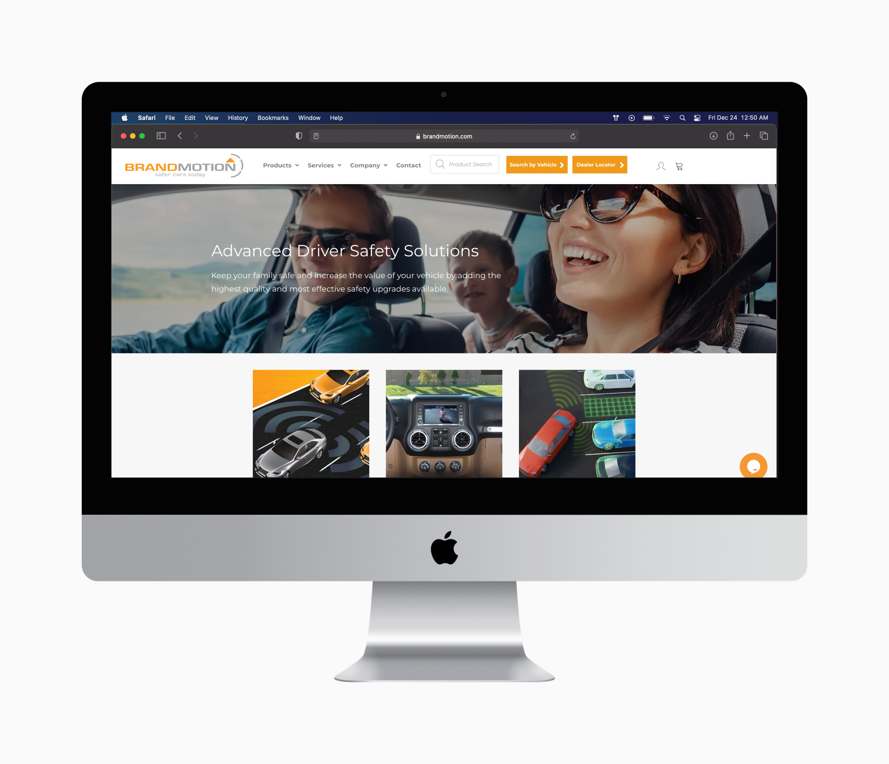

Work
The Carr Virtual Center
 New Iteration
New Iteration Old Interation
Old InterationDesigned a new iteration of The Carr Virtual Center, a platform to hold the works of The Carr Center that can be accessed by users worldwide. This version solves previous issues of navigation difficulties, user-friendliness, and a manageable backend for the staff members.
Collect Connect Research
In a team of four people, we conducted various UX research techniques for Collect Connect, a University of Michigan historical artifact game. With the findings from our research, we provided recommendations on how to improve the user experience of the game.
TaskCheck
 TaskCheck Checklist
TaskCheck ChecklistFrom the initial idea in my head to the final prototype, this was my first attempt at creating an application. This was a semester-long project in order to solve the problem of students getting distracted by their cell phones while doing homework.
Brandmotion
Brandmotion HomepageIn a team with three other students, we examined the product development process of a company called Brandmotion. After completing four interviews, we summarized our findings and provided our recommendations to improve their process.
Dog Rescue Website
 Dog Rescue Homepage
Dog Rescue Homepage
This was a personal project that I created with a dog rescue in mind. This was the project which introduced me to UX Design and inspired me to go to graduate school to pursue this field.